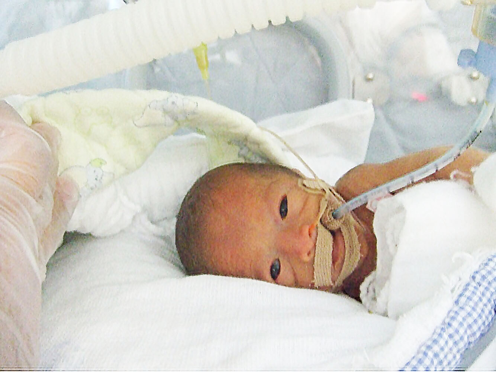
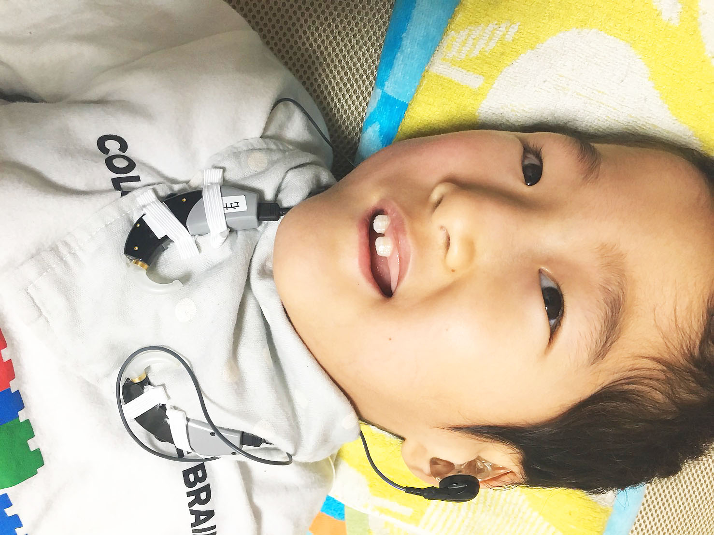
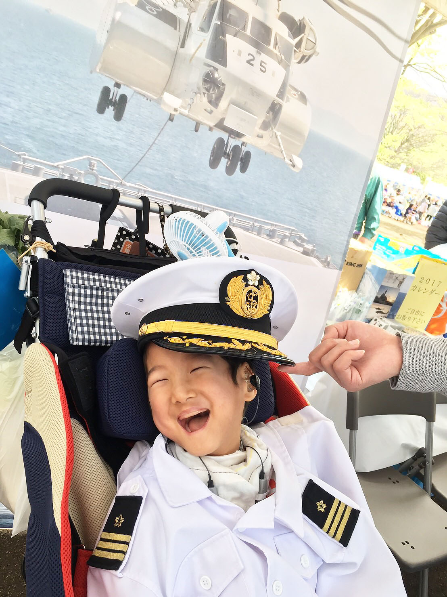
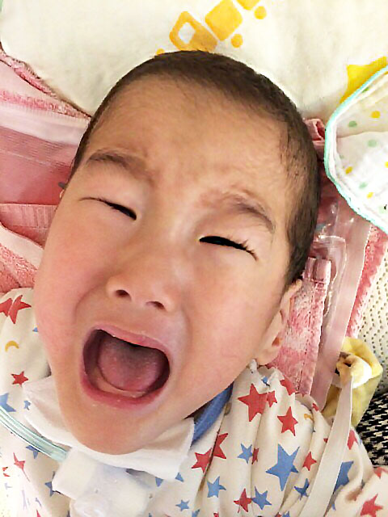

斉藤さんはどのようなご家庭で育ちましたか？
斎藤私が長女で、妹がひとりいます。母は料理が好きで、よく手伝いをさせられてました（笑） 出かけることも好きで、お金が無いなりに、色んなところ連れて行ってくれたり。季節の行事のご飯とかケーキも手作りしてくれてました。 しかし、手作りばかりではなく、市販のケーキを食べたいと思っていましたが、今思えば、すごく幸せなことだなと思います。 私も子どもにお雑煮作ったり、かしわ餅作ったり。そらの誕生日にはケーキも作りますよ！本人はどれだけわかってるのかは、わからないんですけどね。ブログにアップする用にきれいに写真撮って。
お仕事は何をされてましたか？
斎藤推薦で商業高校に行ったんですけど、事務は合わないなってことに気づきました（笑）
そのまま居酒屋に就職したんですよね。キッチンもホールもやって。 そのあとお惣菜屋さんでパートして、そらが生まれたので辞めて、今は仕事できず、という感じです。
パートナーさんとの出会いについて教えてください。
斎藤茅ヶ崎の居酒屋で働きはじめてから、友達の紹介で出会いました。
流産、２度の死産のあとに
出産時のことを教えてください。
斎藤結婚してすぐ、流産したんです。それから2年後に授かったんですが、5ヶ月目に死産して。そのあとにそらが産まれました。そらが2歳の時にも6ヶ月で死産してます。 なので、そらにはお姉ちゃんと妹がいます。
2人目死産したあとに検査して、不育症だとわかりました。自分の中の抗体が、攻撃してしまうという病気です。そらが生まれてきたのも奇跡的なことで。
そらくんが生まれたときのことを聞かせてください。
斎藤妊娠7ヶ月のときに、旅行に行く前に念のため検査したんですけど、頸管長が短くなっちゃっていて、茅ヶ崎の市立病院に入院しました。
そのとき結構お腹が痛くなっちゃって、点滴もどんどん強くなって。結局1週間経って、前日に「もう生まれそうだから、最悪、静岡県立こども病院、長野県こども病院に搬送になるかも」と言われてました。 こども医療に依頼したけど空いてなくて、そんなことしてるうちに「足が出てきちゃってます！」ってなって。赤ちゃん温めるやつとか出てきちゃって。 「え、産むの？」って思ってるうちに、あれよあれよという間に、産まれちゃいましたね……
入院中はどのように過ごしていましたか？
斎藤子どもは人口肛門の手術をして2週間入院になったので、私自身は4日で退院して、ずっと入院中の子どものところに通っていました。
「お尻の穴 開いてない 病気」をネットで調べたり。ご近所さんと話していて「それ鎖肛っていう病気だと思うよ」と言われました。私自身には先生からの説明がちゃんとなくて、退院前に「病名とかもあんまりよくわかっていないんですけど」みたいなことを看護師さんに言ったら「それはまずいですね（笑）」ってなって、 先生に来てもらって退院前にちゃんと話を聞いた、みたいな感じです。
私自身は「鎖肛」っていうのも聞いたことがなかったから「わあ、そんな病気あるんだ」みたいな感じでした。

妊娠７ヶ月での出産だったんですね。
斎藤25週で、786gで産まれるれました。産まれた時は小さく「ホギャ」っと泣いて、安心したのを覚えてます。

本当は市立病院は28週からしか受け入れないんだけどそんなに状態が悪くなかったので、診てもらえることになって、市立病院で産まれ2週間くらいいました。 そのあとおしっこの出が悪くて、腎臓の手術が必要になるかもしれないと言われましたが、結局しませんでした。その時も神奈川県立こども医療が空いてなくて、川崎の聖マリに転院になりました。 搬送は救急車だったんですけど「お母さんは乗れないので電車で行ってください」って言われました（笑） 救急車では途中で酸素のボンベが故障しちゃったらしくて、そらは一旦子ども医療に寄ってから来たみたいでした。私はひとりでずっと知らない場所で待ってて、搾乳もしたくてパンパンだったんですけどいつ来るか、分からなくてできずで……。それから結構経ってから、来ましたね。
聖マリアンナ医大病院にはどのくらい入院しいてたのですか？
斎藤聖マリアンナ医大病院には8ヶ月いて。当時、震災があったので、すごい大変だったんですけど、 退院後にリハビリで市立病院に通って、全体のストレッチをしてもらったり。しばらくPT、その後STを受けていました。
出産した時、どういうお気持ちでしたか？
斎藤無事生まれて良かった」っていう感じだったかな。 その頃は障害とか考えてなくて。成長は遅いだろうけど、普通に育つかなと思ってました。
首が座らないなんてことは……想像しなかったです。歩けるようにはならないかなとは思ってたけど。
脳性麻痺の診断はどこで受けたのですか？
斎藤診断自体は、されてないですね。「超低体重出生児」とは言われてましたけど。脳性麻痺は、自分でネットで調べていて、そうじゃないかなーと思って先生に聞いたら、 「大まかに言えば、そうだね」と。

パートナーさんは当時どういう反応でしたか？
斎藤 主人はそらが産まれる前後にうつ病になって、しばらく家にいました。 病気は仕事上のことが原因だったんですけど。大変でした。その頃の記憶は正直ほとんど無いです……。
お金の心配ばっかりしてて。 結局、そらが生まれてから旦那の実家に帰って、同居させてもらいました。当時はよく喧嘩してましたね。喧嘩というか、私が一方的に言う、みたいな。 病院もあんまり来る人じゃなかったので、週に1、2日来るくらいでしたね。

そらくんの子育てで、辛かったことを教えて下さい。
斎藤 気管切開してもうすぐ３年なんですけど、入院も少なくなって楽になったんですけど、 声が出なくなったのが、悲しかったかな。
もともとそんなに声が出る子ではなかったんですけどね。 その頃の動画は、まだ見れてないですね。
逆に、嬉しかったことはなんですか？
斎藤 ずっと経管で栄養を入れてたので直接あげられなかったんですけど、母乳をはじめてあげられたときですね。 それまでは、授乳室で直接あげてるママたちを見ながら搾乳してたから、やってる時はそんな感じ無かったですけど、帰りの電車ですごい感動して……。
あとは、退院してお家に帰って来たときも嬉しかったです。

そらくんの名前の由来を教えてください。
斎藤 そらが生まれた日は、とってもいい天気だったので。 7月に生まれて、今年7歳になります。

そらくんの好きなおもちゃはなんですか？
斎藤 パラバルーンとか、布がゆらゆら揺れるようなやつとかですね。 目の前で何か揺れていれば笑ってましたね。あとは体を動かしたりとか、激しめのやつが好きです。
ただ、メガネをかけはじめてからはあんまり笑わなくなっちゃいました。見え方が変わっちゃったのかな……。
自分ひとりの時間をもつことで、子どもがもっと愛おしくなる
普段の医療ケアや工夫していることについて教えてください。
斎藤 気管切開、酸素、吸引。痙攣（けいれん）はないです。胃ろうの手術を2歳でしてます

スタイのゴムは、ブログで見て作ってみました。ベビー型補聴器をゴムで付けていて、これにしてから、ハウリングも無くなりました。これでどれくらい聞こえているのかは、わからないんですけどね。 視力も測れないのでわからないんですが、視線が動くので、見えていると思います。

特によく見るブログはありますか？
斎藤 いっぱい見てるんですよ。どれ１番見てるかなー。 （携帯を見せてもらう）
ブックマークがすごい数ですね。
斎藤 見過ぎですよね（笑） リハビリの話とか面白いブログがあって、よく見てます。
パートナーさんとケアの分担はされてますか？
斎藤 育児の分担は基本的には私がやっていて、主人は「言えばやってくれる」という感じです。 夜中はほとんどやることがなくって寝てるので。一応一通りのことはできるんですけど、自分から進んでやるということは無いですね。
フレッシュ方法を教えてください。
斎藤 買い物とか食べ物、カフェ、雑貨屋さん巡りですね。 スタバの看板があるとつい入っちゃったり。
あと月に1回の美味しいものを食べる会と、年に2、3回のママ飲み会があって、楽しいですね。パパに子ども預けて、ママたちだけで24時過ぎまで飲んだりして（笑）
いいですね。ご家族でお出かけすることもありますか？
斎藤 3人で出かけることも多いかな。イルミネーション見に行ったり、お花見行ったり、お祭りだったり、この前は熱海に旅行に行きました。

パパも出かけるのは好きなので。お酒が好きで、運転はしないんですけど。
今後、働きたいですか。
斎藤 働きたいです。 フルタイムで働きたいとは思わないですけど、自分の自由に使えるお金が欲しいです。
パパも出かけるのは好きなので。お酒が好きで、運転はしないんですけど。
病気のこともあると思いますが、きょうだいを欲しいと思いますか？
斎藤 manaできょうだいで遊んでるのを見ると、欲しくなりますね。もう1回はチャレンジしたいです。40歳までには。パパも、もともと保育士をしていて、子どもが好きなんです。
でも、そらの学校の付き添いが落ち着くのが1年くらいなので、1年間は我慢かな。不育症があるので、妊娠したら毎日自分で注射をしなきゃいけないんですよ。
後輩ママに伝えたいことがあったら、聞かせてください。
斎藤 できないことも多いかもしれないけど、工夫すれば、できることもすごく多いということ。私はそれを通園で学びました。 お出かけとかも大変だけど、やってみれば結構できるので、諦めないでやって欲しい。

在宅の方は、頼れるところは頼って、甘えるところは甘えて、ママひとりの時間も作ってください。 パパに預けて、1時間でも外に出たら、違うかなと。
実際「子どもから離れられない」というママも多いんですけど、ちょっと外に出るだけで、 愛おしさも倍増するというか。
茅ヶ崎の行政に対しても言いたいことは沢山ありますけど、地方の状況を聞いていると、恵まれているんだなと思います。先輩たちが頑張ってきてくれたから。いいときに生まれたな、と思ってます。
はじまりは「じゃあやっちゃう？」って軽いノリ
茅ヶ崎で障害児親子サークル「mana」の代表をされていますが、昔からリーダーになることが多かったのですか？
斎藤 飲み会の幹事をやることが多いタイプではありましたね 長女なのもあると思うんですけど、幹事が好き。飲み会の幹事そういえばやることが多かったなあと。
manaを立ち上げたきっかけを教えて下さい。
斎藤 保健所の集まりが年に2、3回しかなくて、物足りなかったんです。 「じゃあやっちゃう？」って軽いノリではじまりましたね。きょうだいがいる人が多かったので、うちはひとりだったので連絡係をやりはじめた感じです。
子どもも一緒に来て。ケアしたりお話ししたり。最近は子どもが学校に通っている人も多いので、親だけのこともあります。
話題は、福祉制度のこととか、病院とか、市役所がどうとか… 縦割り行政なので、市役所は市役所のことしかわからない、障害福祉課は障害福祉課のことだけ、児童相談所も病院も、自分たちの管理のことしかわからないんですよね。
だからまとまった情報とか、悪知恵とかを先輩ママに教えてもらって、結構うちは助かったというか。
最近は編み物教室などイベントも行っているんですよね？
斎藤 そうですね、昨年からイベントをはじめました。編み物は得意なメンバーが教えてくれたり。「体動かしたいねー」ってなってヨガやってみたり。
子どもをみながらできること、ですね。保健所も「何やりたいですか？」って結構聞いてくれるんですけど、それは年に2回しか無いので。
特に楽しかったのは、クリスマス会。みんなで、料理して。 スコップケーキって簡単なやつですけど、それをみんなで作って、楽しかったです。
そういうイベントにボランティアで来てくれる人も探したいですね。 なかなかそこまでの余裕が無いんですけど。

manaの活動で悩むことはありますか？
斎藤 代表として周りの人をどんどん誘っているんですけど、最初は集まりに来るけどフェイドアウトしてしまう方がいるんですよね。入ってきて欲しくない、みたいな。
その見極めが難しいです。自分がすごい助かったので誘ってしまうんですけど、来たい人ばっかりじゃないんだなと。
呼吸器をつけているとなかなか来れない人もいるので、それで来れない人が見れるようにと思って、ブログもはじめました。
参加者の範囲をどこまで広げるかというのも課題です。今は私が結構誘っちゃっているので、ケアがない子が半分くらいなんですけど、医療ケア児に絞った方が良いのかとか。 年齢も今は2歳から小4くらいなんですが、就学前と後だと悩みが変わってくるんですよね。
あと当日に子ども、きょうだい児と遊んでくれるボランティアさんも欲しいんですけど、探すまでに至ってないという感じです。医療ケアはなかなか難しいので。子どもと普通に遊んでくれる人が欲しい。
子どもがいる方とか、保育科の学生さんとか、みなさんどこから探してくるんでしょう。
あと会場の駐車場がいっぱいで、困ってます。子どもを連れてくる人は絶対車なので……。 色々考えていかなきゃな、と思ってます。
大変なことも多いと思いますが、manaを立ち上げて嬉しかったことはありますか？
斎藤 病気がちな子も多いので、当日キャンセルも多いんですよね。 参加者3人とか4人とかだと、やってる意味あるのかなとか、何度も辞めようと思ったけど。
「この会に出会って良かった」と言われると、やっぱりやってて良かったなと思います。
今現在幸せなときはどんなときですか？
斎藤 そらと一緒にいれることです。そらが生きていることが。（そらくんを見ながら）この笑顔がやっぱり……。

ご協力いただいた斉藤さま、そらくんに心から感謝します。